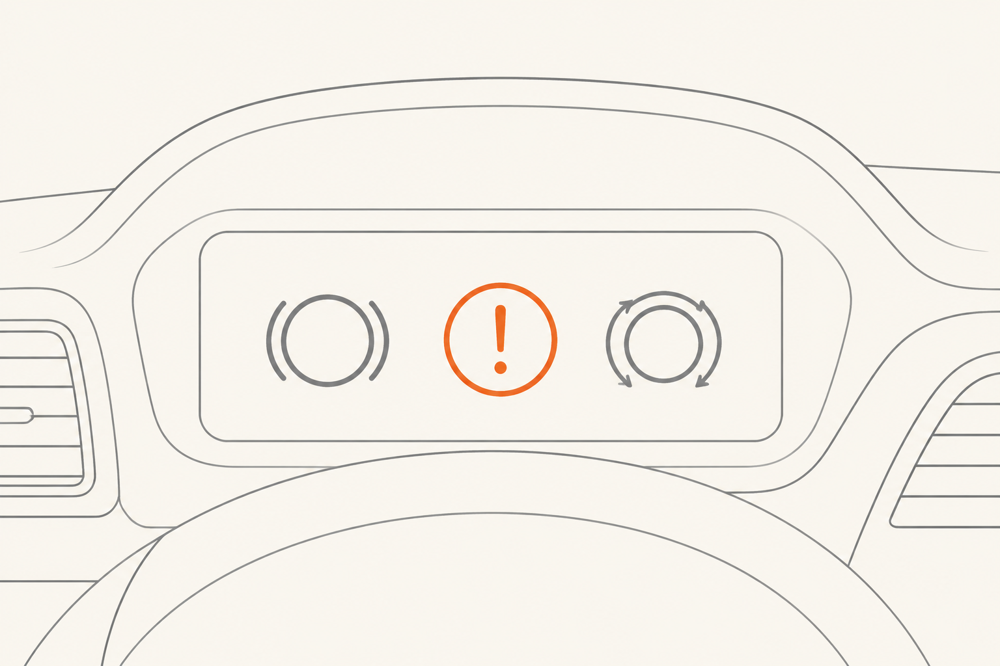

Mantenimiento y señales de alerta
Hasta aquí hemos hecho ingeniería pura. Esta píldora cambia el plano: ¿qué tienes que saber tú, o qué tiene que saber tu cliente, para mantener todo esto vivo y reconocer cuándo algo necesita atención inmediata? Ordenado por dos categorías mentales muy distintas: lo rutinario (lo que se cambia con calendario y kilómetros) y lo urgente (lo que te dice "para el coche YA").
Mantenimiento rutinario
Estos son los intervalos orientativos para un coche de uso mixto. Conducción urbana intensa los acorta; carretera tranquila los estira. No son leyes, son referencias para conversar con el taller.
El líquido de frenos cada dos años es el que más sorprende a clientes. No "se ve" gastado: el aspecto sigue siendo dorado-ámbar y no hay forma intuitiva de notarlo. Pero la humedad acumulada baja su punto de ebullición de manera silenciosa, y un día — bajando un puerto largo o frenando duro varias veces seguidas — el conductor descubre el pedal blando justo cuando más necesitaba lo contrario.
Los testigos del cuadro: amarillo vs rojo
Tu coche no te grita en abstracto. Te avisa con dos colores y la diferencia es importante.

Las cinco señales rojas — para el coche YA
Por encima de cualquier testigo, estos cinco síntomas son los que NO se discuten. Si aparecen, hay que parar el coche en un sitio seguro y no seguir hasta confirmar qué pasa.
- Pedal que se hunde al fondo sin frenar el coche. Pérdida de líquido o aire crítico en el circuito. Frenar con el de mano y llamar grúa.
- Vibración fuerte y nueva al frenar — más que un temblor. Disco gravemente alabeado o componente roto. Riesgo de fallo mecánico.
- Olor intenso a quemado con el coche en marcha o recién parado. Puede ser una pastilla o pinza atascada que esté friendo el disco; riesgo de incendio.
- El coche tira fuerte hacia un lado al frenar. Frenada asimétrica: una rueda agarra y la otra no. En curva o a alta velocidad puede ser peligroso.
- Ruido metálico continuo y grave al frenar (no chirrido agudo). Pastilla totalmente gastada arañando el disco con su placa metálica. Cada metro adicional daña el disco.
Particularidades en eléctricos e híbridos
Si tienes (o atiendes a clientes con) un eléctrico, tres apuntes que cambian el mantenimiento:
Pastillas y discos duran muchísimo más. La regenerativa hace tanto trabajo que las pastillas pueden llegar fácilmente a más de 100.000 km. No es señal de buena calidad — es uso reducido. Eso sí: hay que revisar el desgaste con calendario, no esperar al chivato sonoro, porque una pastilla que casi nunca se usa se puede deteriorar por óxido o por adherencia desigual antes de gastarse.
El líquido de frenos sigue siendo higroscópico. Aunque el sistema mecánico se use poco, la humedad sigue entrando por los latiguillos. Cambio cada dos años, igual que en combustión. No te lo saltes "porque casi no frena".
El óxido superficial en los discos es normal. Especialmente si el coche pasa días parado al exterior. Un par de frenadas firmes lo limpian. Hay propietarios que, viviendo cerca del mar, programan una "frenada de limpieza" cada cierto tiempo. Es una práctica razonable.
Checklist mental antes de un viaje largo
La frase que te llevas
El mantenimiento rutinario son intervalos sencillos: pastillas según uso, discos cada dos juegos, líquido cada dos años. Los testigos amarillos piden revisión pronto; los rojos piden parar. Y hay cinco señales clínicas que, cuando aparecen, no se discuten: paras y revisas. Esto no convierte a nadie en mecánico — convierte a cualquiera en mejor cliente y a ti, mejor profesional CX.
Cerramos el curso con la píldora más estratégica para tu rol: leer la frenada como experiencia de cliente y construir un diccionario operativo de quejas.
fácil ¿Por qué hay que cambiar el líquido de frenos cada dos años aunque el coche apenas haya frenado?
medio Un cliente eléctrico te dice: "Llevo 90.000 km y no he tenido que cambiar pastillas, ¿es normal o me las están pasando por alto?". ¿Cómo respondes?
Es totalmente normal y esperable. La frenada regenerativa hace casi todo el trabajo en conducción cotidiana, y los frenos mecánicos solo entran en frenadas fuertes o a velocidad muy baja. Resultado: las pastillas duran muchísimo, a veces más del doble que en un equivalente de combustión.
Aún así, le recomiendas una revisión visual en la próxima cita de mantenimiento, sin precio sorpresa. Por dos razones: (1) confirmar que el desgaste está dentro de lo esperado y no hay nada irregular, y (2) verificar que las pastillas no han desarrollado adherencia desigual o capa de óxido por desuso. Es un control rápido, no un cambio.
El CX aquí: una pregunta de inquietud se convierte en una visita programada con valor. El cliente se va sintiendo cuidado y con la certeza de que el coche está bien.
reto Diseña un script de tres frases para que un asesor de servicio explique a un cliente que necesita cambiar líquido de frenos, sin que suene a venta.
Una versión posible:
"El líquido de frenos no se ve en el día a día, pero absorbe humedad del aire poco a poco — como una sal mal cerrada en la cocina. Con el tiempo, esa humedad baja la temperatura a la que el líquido empieza a hervir, y si un día frenas mucho seguido en un puerto o en una emergencia, esas burbujas pueden hacer que el pedal se sienta blando justo cuando lo necesitas firme. Por eso lo cambiamos cada dos años: es como cambiar un detector de humo, lo haces antes de que falle, no después."
La estructura: una analogía cotidiana (sal mal cerrada), un escenario concreto (puerto / emergencia), y una comparación con algo aceptado (detector de humo). Ninguna jerga, ningún miedo gratuito. La decisión de hacerlo o no la deja el cliente, pero ahora con contexto.